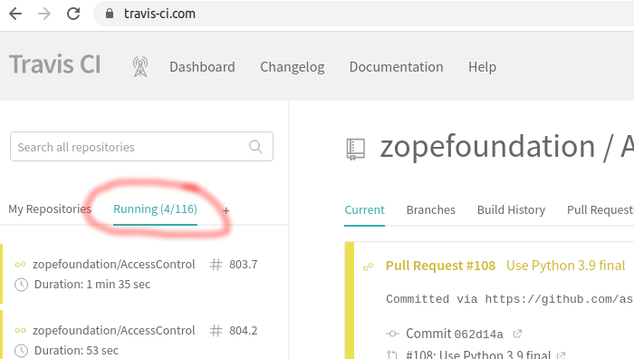
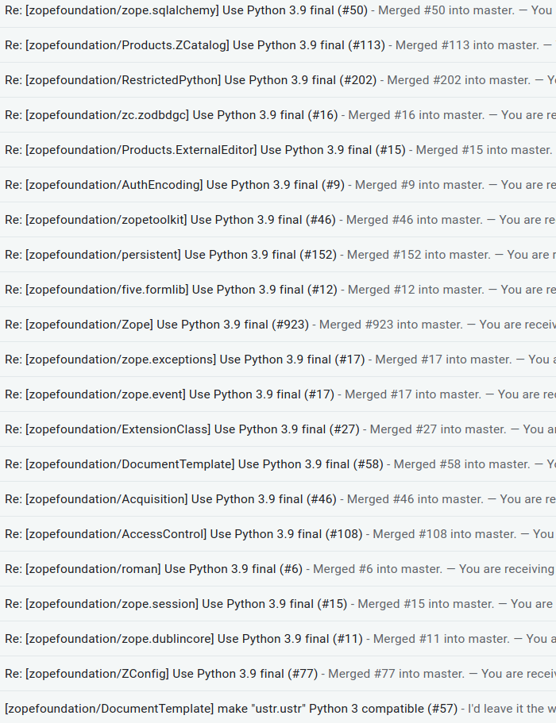

How to create hundreds of pull requests with a single command?
... or "How to win #hacktoberfest"?
Seriously...
- #hacktoberfest is no longer cool ( Hacktoberfest is Hurting Open Source )
- you cannot win it anyway
- the mass pull requests I created (see below) went all to repositories, which do not take part at #hacktoberfest
NOTE: If you are not interested in the story behind, I also created a concise "today-I-learned" post.
prologue
The company I work for has been using Zope, the granddaddy of Python web application servers, for more than 15 years.
What I love most about Zope, except for the stability and the low record of security issues, is the small but fine community.
Especially I love the fact, that almost all Zope plugins,
which are sometimes called Products,
are united in the zopefoundation GitHub organization,
with a current count of 392, of which 330 are active.
Combine the idea of a central repository with the ease of anybody to contribute, and you'll see the obvious benefits immediately:
Do you rely on one package, and there was a breaking change in a dependency? Do you need support for the newest Python version? No problem, either ask somebody for help or fix it yourself. No single repository will be left behind.
Compare this to other frameworks, where most of the plugins are maintained by single persons, which start extremely enthusiastic and at some point in time loose interest.
Having to maintain hundreds of repositories certainly comes with a cost.
It is especially tedious, when you have to do small changes to lots or even all repositories.
the initial situation
We, the Zope maintainers/contributors,
need to test our plugins against Python 3.9,
but Travis,
the CI system we use,
only offered Python 3.9-dev, but no final version.
So we tested against 3.9-dev.
the "problem"
Travis finally provides Python 3.9 final.
But how would we update all repositories which still use Python 3.9-dev?
Manually? No way!
the solution
all-repos provides a set of CLI tools, which enables you to e.g. clone all repos of a GitHub organization, search in them, do mass updates to them, and even finally create pull requests.
all-repos was created by one of the many Anthony Sottile clones out there,
without them, the Python world would not be the same
(Think of pre-commit, pyupgrade, tox, flake8, ...).
Before you can start to work with all-repos,
you need to
- install all-repos
- create a GitHub API token
- create a configuration file
I assume you are able to install a Python package, either via pipx, in a virtual environment, or ...
Also, the token creation is straight forward. A token basically allows programs to interact with GitHub on your behalf.
configuration
The configuration is done with a JSON file, which is named all-repos.json by default.
Mine looks like so
{
"output_dir": "output",
"source": "all_repos.source.github_org",
"source_settings": {
"api_key": "xxx",
"org": "zopefoundation"
},
"push": "all_repos.push.github_pull_request",
"push_settings": {
"api_key": "xxx",
"username": "jugmac00"
}
}
where
output_diris the folder where the repositories are cloned intosourceis the way how to get hold of the repositories, in our case it is a GitHub organizationapi_keyis needed in order to access / write to the repositoriesorgis the corresponding GitHub organizationpushconfigures what should be done after changes had been applied, here it is "create a pull request on GitHub"usernameis the username which should be used for the pull request
Once this is done, we are ready to go.
cloning all repositories
The most basic task is to clone all repositories. Too easy? Think of Zope`s 300+ repositories.
❯ all-repos-clone
Initializing zopefoundation/zope.dottedname
Initialized empty Git repository in /tmp/Zope/output/zopefoundation/zope.dottedname/.git/
Initializing zopefoundation/zc.relationship
Initialized empty Git repository in /tmp/Zope/output/zopefoundation/zc.relationship/.git/
Initializing zopefoundation/zope.app.dependable
...
grepping all repos
Already one and a half year ago, I evaluated all-repos, but struggled a bit to wrap my head around advanced concepts like the so-called autofixers.
On the other hand, grepping was and is straight forward, e.g. the following command looks for 3.9-dev in all repositories' .travis.yml file.
❯ all-repos-grep --repos-with-matches 3.9-dev -- '.travis.yml'
output/zopefoundation/AccessControl
output/zopefoundation/Acquisition
output/zopefoundation/AuthEncoding
output/zopefoundation/DocumentTemplate
...
where
all-repos-grepis the CLI tool we use => grep on all repositories--repos-with-matches=> only show repositories with a match3.9-dev=> the string we are looking for.travis.yml=> only look in files named.travis.yml
This is all fun, but how to get this party started?
update all .travis.yml files
NOTE: When you are on macOS, please have a look at the documentation as the following command uses GNU sed, which may not be present on macOS.
While all-repos-grep and other CLI commands like all-repos-find-files are read-only,
the real fun starts with so-called autofixers.
Basically, an autofixer applies changes to all repositories which match a certain pattern.
While there are pre-built autofixers like all-repos-sed,
which we will use in a minute,
you can also create autofixers yourself.
Ok, so we can bulk-modify repositories, but what then? How do I commit the changes? How do I create a branch? A pull request?
Ok, first things first, let's try to update all repositories...
all-repos-sed --commit-msg "Use Python 3.9 final" s/3.9-dev/3.9/g -- '.travis.yml'
where
all-repos-sedis the CLI command we use => use sed on all repositories--commit-msg "Use Python 3.9 final"=> use a custom commit messages/3.9-dev/3.9/g=> replace3.9-devwith3.9.travis.yml=> only look in.travis.ymlfiles
Still, what about the branches, the commits and the pull request...? Never mind, let's give it a go...
/tmp/Zope
❯ all-repos-sed --commit-msg "Use Python 3.9 final" s/3.9-dev/3.9/g -- '.travis.yml'
***output/zopefoundation/Products.PythonScripts
$ git clone --quiet output/zopefoundation/Products.PythonScripts /tmp/tmp_ve9eest
$ git remote set-url origin git@github.com:zopefoundation/Products.PythonScripts
$ git fetch --prune --quiet
$ git checkout --quiet origin/HEAD -b all-repos_autofix_all-repos-sed
$ sed -i s/3.9-dev/3.9/g .travis.yml
$ git diff origin/HEAD --exit-code
***output/zopefoundation/ZODB
$ git clone --quiet output/zopefoundation/ZODB /tmp/tmp56hy_wls
$ git remote set-url origin git@github.com:zopefoundation/ZODB
$ git fetch --prune --quiet
$ git checkout --quiet origin/HEAD -b all-repos_autofix_all-repos-sed
$ sed -i s/3.9-dev/3.9/g .travis.yml
$ git diff origin/HEAD --exit-code
***output/zopefoundation/transaction
$ git clone --quiet output/zopefoundation/transaction /tmp/tmpt5z_p_jc
$ git remote set-url origin git@github.com:zopefoundation/transaction
$ git fetch --prune --quiet
$ git checkout --quiet origin/HEAD -b all-repos_autofix_all-repos-sed
$ sed -i s/3.9-dev/3.9/g .travis.yml
$ git diff origin/HEAD --exit-code
***output/zopefoundation/BTrees
$ git clone --quiet output/zopefoundation/BTrees /tmp/tmpgw8mhej5
$ git remote set-url origin git@github.com:zopefoundation/BTrees
$ git fetch --prune --quiet
$ git checkout --quiet origin/HEAD -b all-repos_autofix_all-repos-sed
$ sed -i s/3.9-dev/3.9/g .travis.yml
$ git diff origin/HEAD --exit-code
***output/zopefoundation/persistent
$ git clone --quiet output/zopefoundation/persistent /tmp/tmpk7vmtr0w
$ git remote set-url origin git@github.com:zopefoundation/persistent
$ git fetch --prune --quiet
$ git checkout --quiet origin/HEAD -b all-repos_autofix_all-repos-sed
$ sed -i s/3.9-dev/3.9/g .travis.yml
$ git diff origin/HEAD --exit-code
diff --git a/.travis.yml b/.travis.yml
index dba5aa4..dda3ec5 100644
--- a/.travis.yml
+++ b/.travis.yml
@@ -17,7 +17,7 @@ python:
- 3.6
- 3.7
- 3.8
- - 3.9-dev
+ - 3.9
jobs:
include:
$ git commit --quiet -a -m 'Use Python 3.9 final
Committed via https://github.com/asottile/all-repos'
$ git push origin HEAD:all-repos_autofix_all-repos-sed --quiet
remote:
remote: Create a pull request for 'all-repos_autofix_all-repos-sed' on GitHub by visiting:
remote: https://github.com/zopefoundation/persistent/pull/new/all-repos_autofix_all-repos-sed
remote:
Pull request created at https://github.com/zopefoundation/persistent/pull/152
...
Holy moly! It's a thing!
One after another,
this awesome tool goes through all repositories,
creates a branch,
updates .travis.yml,
commits the changes,
and creates a pull request,
all automagically!
Yeah, I know, that is what it is supposed to do, but holy sh... it's real!
meanwhile on Travis

meanwhile on GitHub

Poor co-maintainers, who need to review all those pull requests!
One already asked, whether it is possible to directly push to master... yes, it is!
after one hour in my inbox

conclusion
This amazing tool works like a charm! For this task, it saved me at least a couple of hours.
And there is much more it can do!
thanks
Thanks a lot, Anthony!
all-repos certainly is another invaluable asset for working as a professional software developer,
and it especially helps maintaining open source projects on a large scale.
further information
updates
2020-10-28
- add info on how to directly push to master
2020-03-11
- remove criticism of the documentation, constructive attempts to fix it is better, right?
- add default name of configuration file